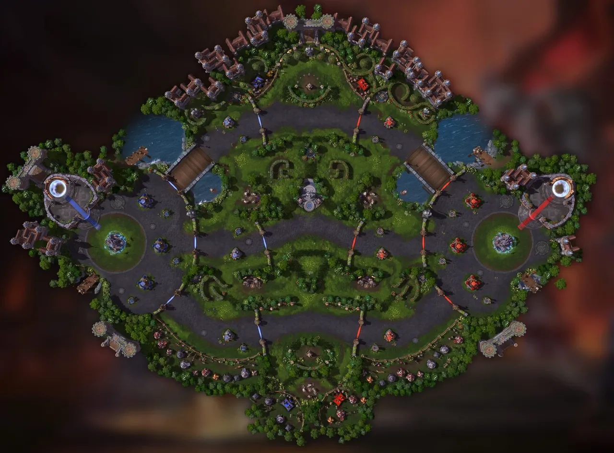

Three lanes or a richer Flagfall
To review · 2026-10-10
Pick: grow Flagfall toward the reference (yard as jungle, flags at its heart, gates at the forts) and park a three-lane map until 5v5 bots exist.

Why not three lanes
Three lanes are a 5v5 shape. With three heroes a side, everyone solo-lanes, fights only happen on rotation, and the game turns into three quiet 1v1s. That breaks “small teams” and “fast” at once.
| Third map, three lanes | Flagfall, more like the reference | |
|---|---|---|
| Team size | Wants 5v5 (1-3-1 or 2-1-2). At 3v3 it is one hero per lane, all match. | Stays 3v3. Two lanes already force the 2–1 split that makes the choice. |
| Match length | Three towers and three forts a side to siege. Flagfall’s two lanes already end at 11–13 min headless; a third lane pushes past the 15 min ceiling. | Same structures; gates add a short third tier per lane (see below). |
| Bots | Need a new layer: lane assignment, top-to-bottom rotations of ~50 m, “which lane is losing”. That is where bots look dumbest. | Today’s one-hop rotation across the yard, plus the flag roles already designed. |
| Camera | The camera sees ~30 m of lane and ~21 m of depth; a map ~50 m deep leaves two lanes off-screen at all times. | Unchanged; a yard fight already sits at the camera’s edge from either lane. |
| Minimap | Becomes the main way to read the match. Our “readable at a glance” pillar flips. | Stays a helper. |
| Code | Layouts already take a list of lanes, so the map itself is mostly data. The cost is 50% more minions, bot rotation logic, a new look, tuning and online bytes. | Flags (already specced in moba-map-2) plus gates. |
| Online | Three live waves and two more structures per side; the 7 KB envelope gets tight. | As planned for Flagfall. |
What Flagfall gains: the reference’s best idea, a middle worth leaving your lane for. The yard becomes the jungle, the flags its objective. What it loses: nothing that matters, as long as we skip mercenary camps (still on the cut list) and keep it two lanes.
Gates
Fit: Flagfall only. Its forts and courtyards are the HotS-shaped part of our maps, and a gate across each lane at the base block (x ±28) walls in fort and core. Overthrow has one lane, no fort and the Ball as its siege opener; a gate there only lengthens the match. No third map, so no question there.
Make them a speed bump, not a wall: low HP so one wave with a hero chews through in about ten seconds. They give the losing team a breather and a place to turn a fight, which helps comebacks against bots.
What they cost:
- Obstacles are team-blind and static today. Gates need a per-team obstacle list (yours without your gates) and a path grid per team, rebuilt when a gate falls. The grid is built once per start now; brutes already keep their own, so two more is a known pattern.
- Skillshot sweeps and sight lines take the shooter’s team: enemy shots stop, ours pass.
- Minions and bots already attack structures, so a gate is a structure with a lane id and no gun. Siege goals need to treat it as the next target in the lane.
- A view (a low stone gate in team ink), rubble when it falls, a minimap mark, a snapshot field.
-
Proof:
simulate --summary --baseon Flagfall. If gates push seeds past 15 min, lower their HP first.
Order: flags first (they are the reason to leave a lane), gates after, each its own brief.
Layout sketch: Flagfall, grown
Top-down, x along the lane, team A on the left. Same court as today (104 × 32 m); new are the gates and the yard as the objective ground.
If Oskar wants three lanes anyway, the honest order is: bots hold 5v5 on Flagfall first, then a big map as a fourth mode, not a third map in the quick-play rotation.